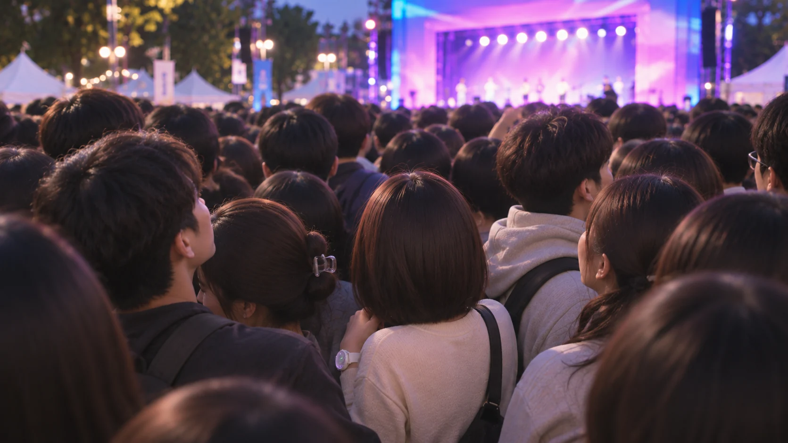
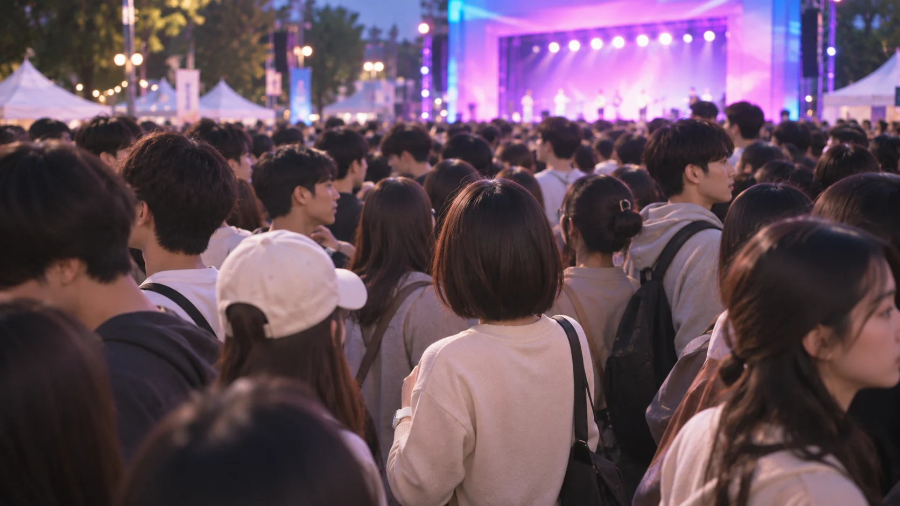
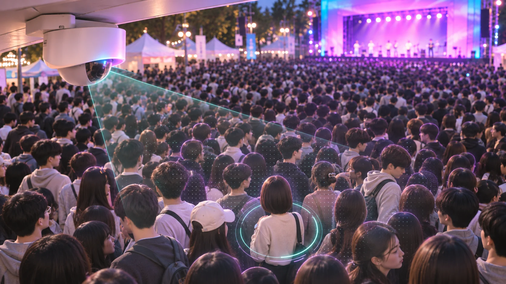
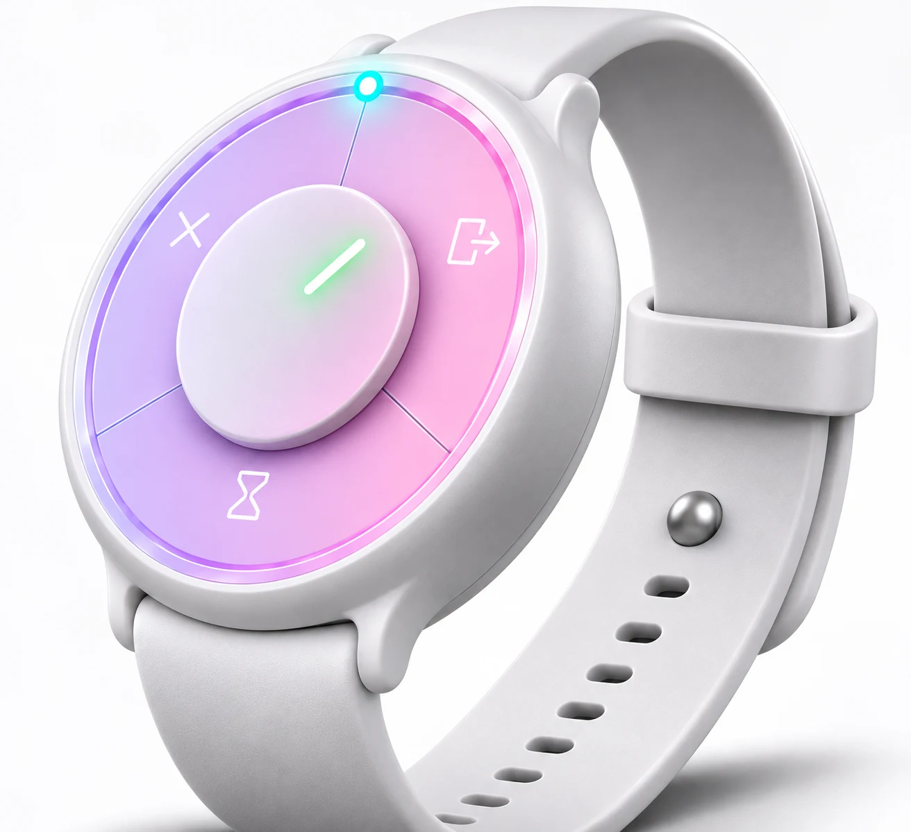
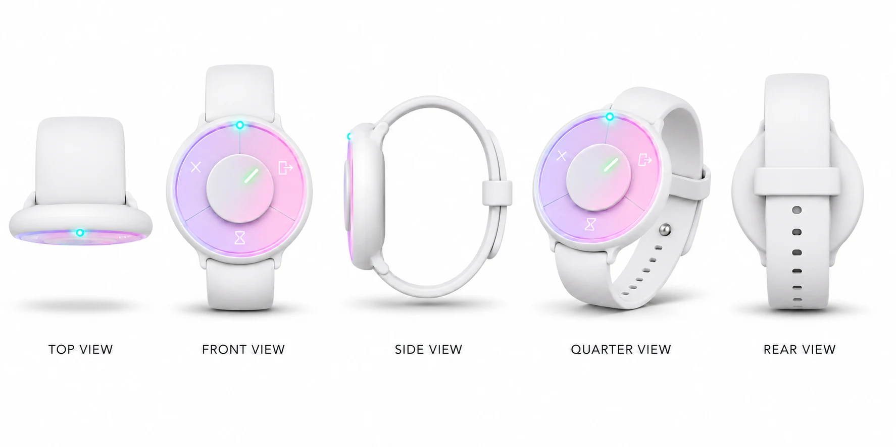

문제 01
관람 도중 자리를 비우고 다시 돌아오는 일이 주변에 폐가 될까 부담스럽습니다. 결국 참거나, 돌아오지 못합니다.
02 · User & Problem
2031년, MCU AI 기기가 일상이 된 학교 축제. 수천 명이 모인 재학생 관람구역에서 관람객은 공연보다 눈치와 위험을 먼저 마주합니다.

관람 도중 자리를 비우고 다시 돌아오는 일이 주변에 폐가 될까 부담스럽습니다. 결국 참거나, 돌아오지 못합니다.

공연에 몰입할수록 안전거리는 무너지고, 입·퇴장 때 한꺼번에 몰리는 인파는 부상으로 이어질 수 있습니다.
03 · Key Features
돌려서 말하고, 빛과 진동으로 듣습니다. 화면을 보지 않아도 되는 세 가지 기능.

다이얼을 ‘관람 몰입’ 또는 ‘이탈 희망’ 쪽으로 돌리면 AI가 구역 배치를 조율합니다. 자리를 비우는 일이 눈치가 아니라 시스템의 일부가 됩니다.

본체 외곽의 파란 점이 실시간으로 회전하며 가야 할 방향을 가리킵니다. 입·퇴장 때는 이동 순서와 경로를 차례로 안내합니다.

주변 간격이 좁아지면 다이얼 외곽에 LED가 번지고 손목에 진동이 전해집니다. 상황이 나아질 때까지 단계적으로 알려줍니다.
04 · How it Works
입력 정보 → AI 판단 → 물리적 반응

다이얼로 입력한 관람 참여 의사와 주변 관람객과의 거리, 구역 밀집도를 함께 감지합니다.
본체의 MCU AI가 구역 전체의 흐름을 읽고 지금의 상태를 유지·주의·조정·위험 네 단계로 판단합니다.
파란 점이 이동 방향으로 회전하고, 외곽 LED와 햅틱 진동이 단계에 맞는 세기로 반응합니다.
05 · Use Scenario
안내 부스에서 FLOW DIAL을 받아 차고, 다이얼을 ‘관람 몰입’으로 맞춥니다.
06 · Design
돌리고 싶어지는 둥근 다이얼, 무광 화이트 바디, 라벤더에서 핑크로 번지는 파스텔 페이스. 공연의 흥을 깨지 않도록 조용하고 부드러운 형태를 택했습니다.



3D 불러오는 중…07 · Specs & Materials
